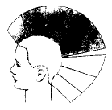

미용장 (2002-04-07 기출문제)
1과목: 임의 구분
1. N.M.F 의 미용 용어 설명으로 맞는 것은?
- 샴푸제나 콜드 웨이브액, 트리트먼트제 등에 배합하는 화장품의 원료
- 모발이나 피부속에 천연으로 존재하는 보습인자
- 건조성의 두발에 적합한 엷은 유액 상태의 린스
- 기름과 물을 혼합하면 안정된 유액이나 크림을 제조할 때 첨가시키는 계면활성제
(정답률: 알수없음)

2. 다음 중 가장 부작용 및 자극이 적으며 피부에 영양을 공급하고 습도를 유지시켜 보호하는 것은?
- 크린싱크림(cleansing creme)
- 콜드크림(cold creme)
- 약용크림
- 바니싱크림(vanishing creme)
(정답률: 73%)
3. 헤어 커트에서 콘케이브(concave)로 시작되는 커트는?
- 원렝스 커트(one longth cut)
- 스파니엘 커트(spaniel cut)
- 이사도라 커트(isadora cut)
- 레이어 커트(layer cut)
(정답률: 알수없음)
4. 미용사, 간호사 등 물을 많이 쓰는 직업군과 가장 관계 있는 것은?
- 접촉피부염
- 아토피성 피부염
- 지루피부염
- 건성습진
(정답률: 50%)
5. 헤어린스나 헤어트리트먼트에 사용되는 계면활성제는?
- 음이온성 계면활성제
- 양쪽성 계면활성제
- 양이온성 계면활성제
- 비이온성 계면활성제
(정답률: 75%)
6. 두상에서 두상의 온도관계로 염색되기 어려운 부분은?
- 프렌지 부분
- 골든 포인트 부분
- 관자놀이 부분
- 네이프 부분
(정답률: 알수없음)
7. 다음 중 퍼머넨트 웨이브 제의 제2제(산화제)인 과산화수소(H2O2)를 주성분으로 하는 경우 모발의 퇴색에 영향을 미치지 않는 농도는?
- 6%
- 9%
- 12%
- 2.5%이하
(정답률: 알수없음)
8. 전체를 푸른계열로 염색했는데 2개월 후에는 퇴색해서 보라계열로 변화되어 다시 한번 푸른계열로 염색할 경우, 먼저 퇴색한 부분은 어떻게 수정해야 하는가?
- 단순히 푸른색을 추가
- 블리치해서 푸른색을 추가
- 노랑색을 추가
- 보라색을 추가
(정답률: 70%)
9. 얼굴측면이 볼록형인 고객이 업스타일을 할 때 잘못된 스타일은?
- 정수리 부분에 볼륨을 많이 준다.
- 목덜미 부분에 포인트를 준다.
- 양옆의 빗질을 목덜미 부분을 향하여 45° 각도로 내려 빗는다.
- 뒷부분의 볼륨을 가능한 적게 준다.
(정답률: 40%)
10. 지나친 피지분비와 발한작용이 있는 피부의 경우 오래 지속될 수 있는 화운데이션은?
- 크림타입
- 파우더타입
- 리퀴드타입
- 케이크타입
(정답률: 38%)
11. 한국인 두발의 평균 굵기는?
- 0.06 – 0.12mm
- 0.2mm
- 0.01mm
- 0.25mm
(정답률: 알수없음)
12. 영구염색제 중 암모니아의 역할이 아닌 것은?
- 두발을 팽윤시켜 모표피를 열어준다.
- 두발을 유연하게 하여 염색소와 산화제의 침투가 용이하도록 돕는다.
- 계면활성제 역할을 한다.
- 두발을 알칼리화 시킨다.
(정답률: 46%)
13. 커트 후 유사한 효과를 갖고 있지 않는 것은?
- 테이퍼링 커트(Tapering)
- 훼더링 커트(Feathering)
- 슬리더링 커트(Slithering)
- 블런트 커트(Blunt)
(정답률: 알수없음)
14. 레이저(Razor)에 의한 헤어컷트(Hair Cut) 방법중 옳은 것은?
- 숏 헤어에서는 레이저를 당기는 힘 쪽이 강해야 한다.
- 롱 헤어에서는 레이저를 미는 힘 쪽이 강해야 한다.
- 숏 헤어에서는 레이저를 미는 힘 쪽이 강해야 한다.
- 숏 헤어에서는 레이저를 미는 힘과 당기는 힘이 균등해야 한다.
(정답률: 알수없음)
15. 두발의 가장 바깥층으로 화학약품에 대한 저항이 가장 강한 층은?
- 에피큐티클(Epi-Cuticle)
- 엑스큐티클(Exo-Cuticle)
- 엔도큐티클(Endo-Cuticle)
- 코르텍스(Cortex)
(정답률: 알수없음)
16. 컬러링 제품의 pH에 대한 설명 중 옳은 것은?
- 과산화수소는 알칼리성이다.
- 탈색제는 pH 3 정도의 강산이다.
- 암모니아는 pH가 9 ~ 11 정도이다.
- 염색후 pH가 높은 컨디셔너를 사용해야 한다.
(정답률: 30%)
17. 다음 두발에 대한 용어 중 성격이 다른 하나는?
- 저항성모
- 버진헤어
- 발수성모
- 다공성모
(정답률: 알수없음)
18. 최신 유행 메이크업 패턴이 아닌 것은?
- 매트 메이크업
- 화이트 메이크업
- 글로시 메이크업
- 파스텔 메이크업
(정답률: 60%)
19. 네일 랩(Nail Wrap)의 종류가 아닌 것은?
- 실크
- 화이버글라스(fiberglass)
- 아크릴
- 린넨(linen)
(정답률: 64%)
20. 흰머리가 많은 모발을 염색 할 때에 10 볼륨(3%)의 과산화수소(H2O2)보다 20 볼륨의 과산화수소를 사용하는 이유 중 틀린 것은?
- 착색의 효력이 더 뛰어나기 때문이다.
- 모발색을 밝게 하지 않기 때문이다.
- 산화력이 더 뛰어나기 때문이다.
- 과산화수소의 산소방출이 많기 때문이다.
(정답률: 알수없음)
2과목: 임의 구분
21. 퍼머넨트 웨이브시 엔드 페이퍼(end paper)사용기법 중 양면사용 기법 더블랩을 사용하여야 하는 경우는?
- 두발 숱이 적을 때
- 결 처리(틴닝)가 많이 된 두발
- 염색된 두발
- 두발의 질이 다공성인 두발
(정답률: 알수없음)
22. 헤어디자인을 할 때 모양, 결, 구조, 색깔의 조화가 잘 이루어져야 훌륭한 디자인이라고 할 수 있는데 이런 것들을 ( )이라 한다. ( )안에 적당한 용어는?
- 연출(direction)
- 구성(elements)
- 몰딩(molding)
- 균형(balance)
(정답률: 50%)
23. 컬핀닝(curl pinning)의 방법이 아닌 것은?
- 사선고정
- 교차고정
- 수평고정
- 수직고정
(정답률: 64%)
24. 벽돌쌓기 퍼머넨트 웨이빙시 가장 적절한 스트랜드의 와인딩 각도는?
- 60°
- 90°
- 120°
- 180°
(정답률: 67%)
25. 두발색을 결정하는 것은 모질내에 분포되어 있는 멜라닌의 양과 유형에 따라서 결정되어진다. 멜라닌의 여러 유형 중 특히 동양인이 서양인보다 많이 함유하는 색소는?
- 페오 멜라닌
- 유멜라닌
- 파라멜라닌
- 울소멜라닌
(정답률: 70%)
26. 헤어팩을 행하는 방법 중 틀린 것은?
- 샴푸 뒤 두발을 적당히 타올 드라이 하고 트리트먼트크림을 충분히 도포한다.
- 스팀기를 사용하는데 온도는 70∼80℃정도이고 약 10분간 가열한다.
- 스팀기가 없는 경우에는 캡을 씌우고 적외선 등으로 가열하여도 된다.
- 두발이 극단적으로 건성모일 경우 트리트먼트 크림에 올리브유, 라놀린, 스쿠알렌 등을 섞어 사용한다.
(정답률: 77%)
27. 다음 커트의 전개도는 어떤 커트와의 혼합형인가?

- 스퀘어 + 원랭스
- 레이어 + 그라데이션
- 원랭스 + 레이어
- 그라데이션 + 원랭스
(정답률: 47%)
28. 퍼머넨트 웨이브 시술방법 중 워터래핑(water wrapping)에 대한 설명 중 옳지 않은 것은?
- 워터래핑의 장점은 퍼머 후 모발의 손상을 줄일 수 있다는 것이다.
- 워터래핑이란 모발에 제1액을 고루 도포한 후에 와인딩하는 방법이다.
- 워터래핑이란 모발에 물을 축여서 와인딩하고 나중에 퍼머제를 도포하는 방법이다.
- 워터래핑의 단점은 퍼머넨트 웨이브제의 농도가 희석되어 웨이브 형성에 실패할 수 있다.
(정답률: 알수없음)
29. 블로우 드라이의 효과는 두발의 어떤 결합에 의해서 이루어지는가?
- 염결합
- 펩타이드 결합
- 수소결합
- 시스틴결합
(정답률: 70%)
30. 두피가 건조할 때 행하면 바람직한 스캘프 트리트먼트는?
- 플레인 스캘프 트리트먼트(Plain scalp treatment)
- 드라이 스캘프 트리트먼트(Dry scalp treatment)
- 오일리 스캘프 트리트먼트(Oily scalp treatment)
- 댄드러프 스캘프 트리트먼트(Dandruff scalp treatment)
(정답률: 79%)
31. 우리나라의 제3군 법정전염병이 아닌 것은?
- B형간염
- 쯔쯔가무시증
- 말라리아
- 한센병
(정답률: 알수없음)
32. 작업환경 관리 목적과 관련이 가장 먼 것은?
- 직업병 예방
- 산업재해 예방
- 산업피로 억제
- 생산성 증대
(정답률: 82%)
33. 식품의 부패란 주로 무엇이 변질된 것인가?
- 지방
- 당분
- 비타민
- 단백질
(정답률: 54%)
34. 환자가 발생 즉시 격리함으로써 전염병을 가장 효과적으로 예방할 수 있는 것은?
- 뇌염, 소아마비
- 장티푸스, 파라티푸스, 콜레라
- 홍역, 디프테리아, 결핵
- 성병, 콜레라, 결핵, 천연두
(정답률: 알수없음)
35. 인체에 가장 유해한 분진의 크기는?
- 0.01 ~ 0.1㎛
- 2 ~ 5㎛
- 10 ~ 20 ㎛
- 1 ~ 2 mm
(정답률: 58%)
36. 우유를 63℃에서 저온살균할 때 알맞은 시간은?
- 5분
- 10분
- 20분
- 30분
(정답률: 알수없음)
37. 다음 전염병 중 전염병 유행이 계절적 변화와 관계가 가장 큰 것은?
- 결핵
- 일본뇌염
- 나병
- 광견병
(정답률: 91%)
38. 충치나 우치의 예방을 위해서 상수 중의 불소는 어떤 상태가 가장 좋은가?
- 많을수록 좋다.
- 없는것이 좋다.
- 0.8 ∼ 1.0 ppm 함유가 좋다.
- 10 ∼ 12 ppm 함유가 좋다.
(정답률: 90%)
39. 다음 중 파스퇴르가 고안한 소독법은?
- 저온 소독법
- 고온 살균법
- 자외선 소독법
- 여과 소독법
(정답률: 73%)
40. 다음 중 일반적으로 고압하에서 비만인 사람에게 가장 잘 올 수 있는 질환은?
- 잠수병
- 항공병
- 난청
- 신경혈관증
(정답률: 알수없음)
3과목: 임의 구분
41. 하천수에서 BOD가 낮다는 것은 다음 중 어떤 의미로 볼 수 있는가?
- 유기물질의 오염이 적다.
- 유기물질의 오염이 높다.
- 물의 경도가 낮다.
- 물의 경도가 높다.
(정답률: 50%)
42. 먹는 물의 수질 판정기준으로서 대장균군의 기준은?
- 50㎖ 중에서 100을 넘지 아니할 것
- 50㎖ 중에서 검출되지 아니할 것
- 100㎖ 중에서 100을 넘지 아니할 것
- 100㎖ 중에서 검출되지 아니할 것
(정답률: 50%)
43. 세계보건기구에서 규정한 조산아의 기준은?
- 체중 2.5kg 이하
- 체중 3.0kg 이하
- 임신 39주 이후의 출생아
- 임신 28주 이전의 출생아
(정답률: 알수없음)
44. 산업재해의 평가와 관계없는 것은?
- 도수율
- 사망율
- 강도율
- 빈도율
(정답률: 40%)
45. 국민영양 권장량을 결정하는 인자가 아닌 것은?
- 연령
- 성별
- 직업
- 성격
(정답률: 50%)
46. 다음 중 세계보건과 관계 없는 국제기구는?
- UNICEF
- FAO
- WHO
- UNTC
(정답률: 59%)
47. 알콜 소독에 관한 설명이 틀리는 것은?
- 균체단백 작용이 있다.
- 대사기전에 저해 작용이 있다.
- 70∼75%가 가장 적당한 희석농도이다.
- 포자균의 멸균에 효과가 크다.
(정답률: 알수없음)
48. 하수처리에서 활성오니법은 유기물질의 어떤 작용을 이용한 방법인가?
- 산화작용
- 부패작용
- 침전작용
- 발효작용
(정답률: 28%)
49. 개달물 전염이 가장 잘 되는 전염병은?
- 유행성 출혈열
- 유행성 간염
- 트라코마
- 페스트
(정답률: 80%)
50. 지역사회의 보건상태를 가장 잘 나타내는 것은?
- 모성사망율
- 조사망율 및 조출산율
- 영아사망율
- 신생아사망율
(정답률: 73%)
51. 이.미용업소의 위생지도 및 출입검사를 하기 위하여 보건복지부, 특별시· 광역시· 도 및 시· 군· 구에 두도록 되어 있는 자는?
- 식품위생감시원
- 자율지도원
- 공중위생감시원
- 별정직공무원
(정답률: 알수없음)
52. 다음중 청문을 실시하는 내용이 아닌 것은?
- 이ㆍ미용사의 면허취소
- 공중위생영업의 정지
- 영업소의 폐쇄 명령
- 일부시설의 개선명령
(정답률: 80%)
53. 다음 중 공중위생영업소의 위생관리 수준을 향상 시키기위하여 위생평가계획을 수립하는 자는?
- 시ㆍ도지사
- 시장ㆍ군수ㆍ구청장
- 노동부장관
- 보건복지부장관
(정답률: 25%)
54. 다음 중 위생관리등급의 구분으로 틀린 것은?
- 최우수업소 : 녹색등급
- 우수업소 : 황색등급
- 일반관리대상업소 : 백색등급
- 특별업소 : 홍색등급
(정답률: 90%)
55. 이ㆍ미용업소 내에서 소독한 기구와 소독하지 아니한 기구를 분리 보관하지 아니한 때의 3차위반 행정처분 기준은?
- 영업정지10일
- 영업정지15일
- 영업정지1월
- 영업장폐쇄명령
(정답률: 40%)
56. 이ㆍ미용업소 내에서 손님에게 윤락행위ㆍ음란행위를 알선 또는 제공하였을 때의 영업소에 대한 1차위반 행정처분기준은?
- 영업정지1월
- 영업정지2월
- 영업정지3월
- 영업장폐쇄명령
(정답률: 60%)
57. 관계공무원의 출입 ㆍ검사를 거부ㆍ기피하거나 방해한 때의 1차위반 행정처분기준은?
- 영업정지 10일
- 영업정지 15일
- 영업정지 20일
- 영업정지 1월
(정답률: 55%)
58. 보건복지부령으로 정하는 위생교육을 받지 아니한 때의 1차위반 행정처분은?
- 경고
- 영업정지5일
- 영업정지10일
- 영업정지1월
(정답률: 70%)
59. 영리를 목적으로 무자격자 안마사로 하여금 의료법령이 정하는 바에 의한 시술을 목적으로 하는 안마시술행위를 한 때의 1차위반 행정처분기준은?
- 영업정지 1월
- 영업정지 2월
- 면허취소
- 영업장폐쇄명령
(정답률: 알수없음)
60. 이ㆍ미용영업소내의 영업정지 명령 또는 일부 시설의 사용중지 명령을 받고도 그 기간 중에 영업을 하거나 그 시설을 사용한 자의 벌칙은?
- 1년 이하 징역 또는 1 천만원 이하의 벌금
- 1년 이하의 징역 또는 5 백만원 이하의 벌금
- 1년 이하의 징역 또는 3 백만원 이하의 벌금
- 1년 이하의 징역 또는 1 백만원 이하의 벌금
(정답률: 알수없음)